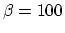
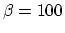
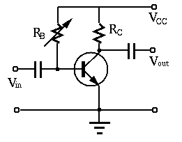

- Problem 1. (30 points)
Assume  , ,
, ,  when the base-emitter PN
junction is forward biased.
when the base-emitter PN
junction is forward biased.
- What value should
 be to achieve the desired
be to achieve the desired  ?
With this
?
With this  , what value should
, what value should  be to achieve the desired output
voltage (in the middle of the linear range of the output
characteristic plot)?
be to achieve the desired output
voltage (in the middle of the linear range of the output
characteristic plot)?
- If the measured effective (RMS) voltage of the output
 (the AC component of
(the AC component of  ) is
) is  and the voltage gain of the
circuit is known to be
and the voltage gain of the
circuit is known to be  (negative sign for 180 degree phase
shift), what is the effective voltage of the input
(negative sign for 180 degree phase
shift), what is the effective voltage of the input  (AC
component of )? What is the input resistance of the transistor
, the reciprical of the slope of the
input characteristic plot, at the current DC operating point ?
(AC
component of )? What is the input resistance of the transistor
, the reciprical of the slope of the
input characteristic plot, at the current DC operating point ?

- Problem 2. (35 points)
A transistor circuit and the output characteristic plot of the transistor
in the circuit are shown below. Assume
,  ,
and
,
and  . Assume when the base-emitter PN-junction
is forward biased, and
. Assume when the base-emitter PN-junction
is forward biased, and  when the transistor is saturated.
when the transistor is saturated.


- Problem 3. (35 points)
In the transistor amplification circuit shown below, ,
. Assume the AC component of the input current is
. Sketch the output characteristic plot
of the transistor circuit with the load line, and the current  ,
output voltage on the same plot, for each of the
following three cases:
,
output voltage on the same plot, for each of the
following three cases:
-
 ,
,
 ;
;
-
,
 ;
;
-
,
.
Commont on each of the three cases in terms of both amplification and
distortion.